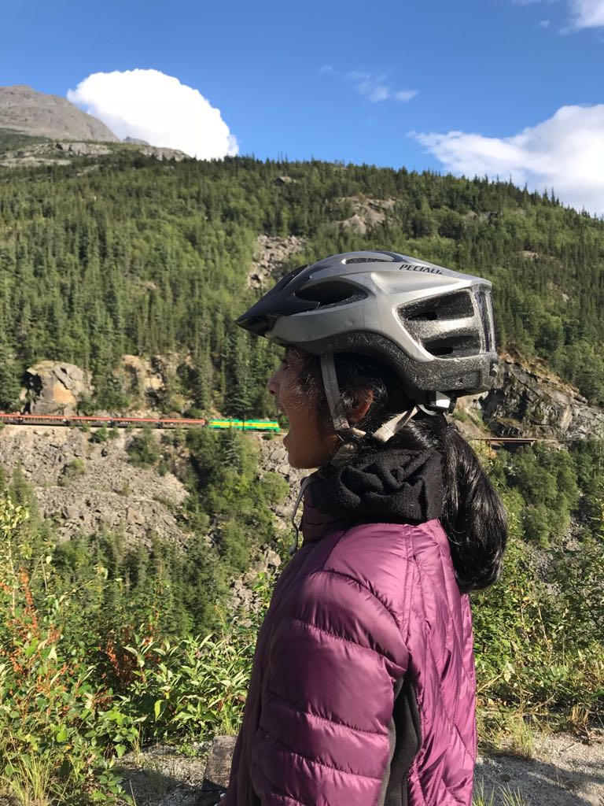
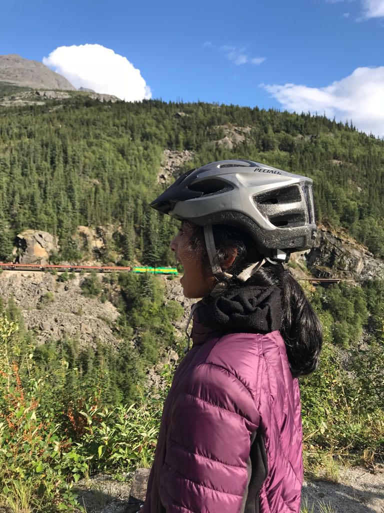

Highlights from the Trip:
- 👭 Cruise trip with my family! ~30 family members!!
- 🛳️ Cruise! Ate ice cream all day every day!
- 🚴♀️ Biked down Klondike Mountain
- 🚊 White Pass Train Tour along the mountainside
Favorite Memory
Biking down Klondike Mountain! Had an awesome view and immersed myself into wildlife. We even biked into Canada, so it was super cool to cross the border on foot!
Book Rec
Looking For Alaska by John Green